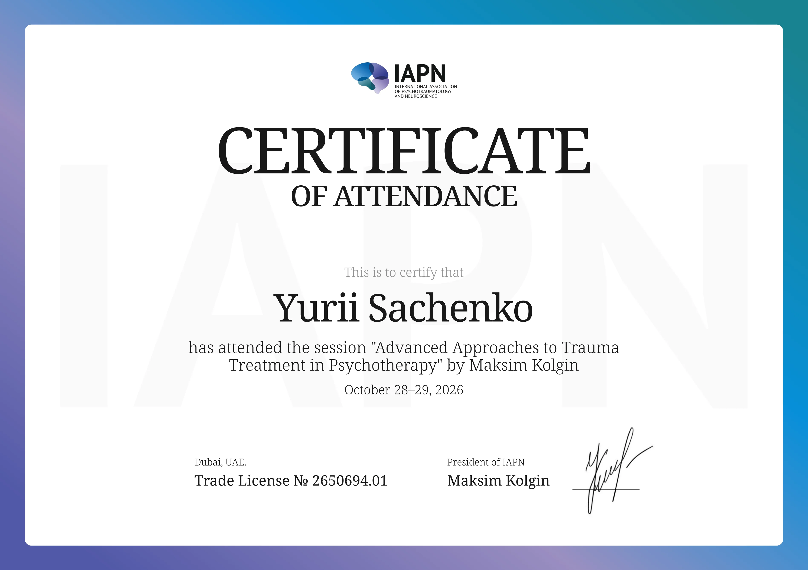

Project narratives currently available in English.
[ MY PATH / EDUCATION / OCTOBER 2026 ]
CONTINUED
LEARNING.
An openly presented record of participation in advanced approaches to trauma treatment in psychotherapy — part of a broader lifelong learning story.
[ 01 / CONTINUED LEARNING ]
Curiosity beyond software.
I continue to learn about psychology and trauma-informed approaches, alongside technology, visual production and entrepreneurship. This is a personal education milestone — not a claim of clinical qualification.
EVENTAdvanced Approaches to Trauma Treatment in Psychotherapy
PRESENTERMaksim Kolgin
DATESOctober 28–29, 2026
CREDENTIAL TYPECertificate of Attendance

Important distinction: The certificate verifies attendance at a psychotherapy treatment seminar. It does not certify me as an EMDR therapist, psychologist, psychiatrist or practitioner authorized to provide mental health care.